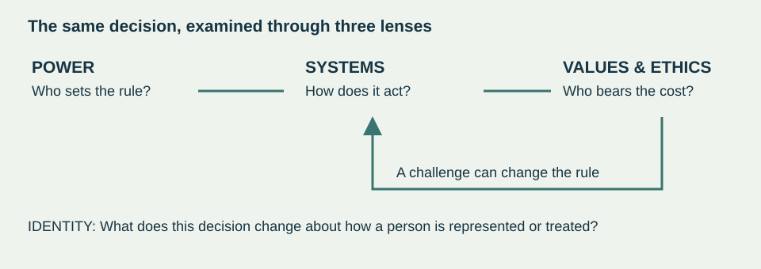
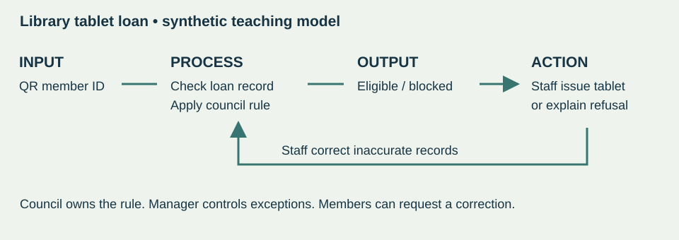

View your exported answer copy
If the download did not appear, select and copy the text below into your own document. This is not a submission.
One case. Deeper thinking.
Who gets to decide what your digital identity allows you to do?
You have already investigated an Identity case. Keep that case. This workbook adds three lenses so you can explain how a digital system distributes power, makes decisions and expresses competing values.
Your mission: build a case map, explain a causal connection, compare two sources and defend a qualified judgment. A list of concept definitions will not be enough.
Bring these
Your previous Identity case and its sources; your textbook; a pen or this workbook on a device. If your case is unavailable, tell your teacher before starting. Use your own earlier work rather than reconstructing an entire investigation today.
Readings already assigned
- Power: §2.4, printed pp. 37–38. Who controls a consequential decision?
- Systems: §2.6, printed pp. 41–43. Which parts depend on each other?
- Values & Ethics: §2.7, printed pp. 44–49. Which defensible values conflict?
What changes in your thinking?
Builds on: your Identity inquiry and evidence record. New learning: connect a mechanism to power and an ethical trade-off. Prepares for: Paper 1 explanation/evaluation, Paper 2 source relationships and later inquiry planning.
The route
70-minute bridge: retrieve 7 • learn 10 • model 6 • map/apply 18 • Paper 1 practice 8 • sources 12 • repair/defend 6 • reflect 3. The teacher releases the independent task separately at a later sitting.
This is original classroom practice, not an official IB paper. The time estimates are a teaching guide. You may draw, type or use agreed access supports. Independent thinking is required even when the response format changes.
What stayed with you?
Close your notes for the first four minutes. Uncertainty is useful evidence of what to revisit.
Check without erasing
Open the assigned pages. Keep your first attempt. Add one correction below and identify the page that helped. A confident misconception is more useful to catch than a blank space is to hide.
Quick distinction: a stakeholder is someone affected by the system or able to influence it. A concept is a lens for understanding the relationships. “The government is a stakeholder” does not yet explain power.
Three lenses, one connected explanation
Keep the digital mechanism visible. A concept should explain something that the system does.
Power
Power is the capacity to influence or control what others can do. It can sit in a person’s expertise, access to information, rewards or sanctions. It can also be built into an organization’s rules, ownership and authority. Ask who sets the rule, who can refuse and who can challenge a decision.
Systems
A system has interacting, interdependent parts. Digital systems include people, data, hardware, software, networks and rules. Trace an input through a process to an output and a human decision. Changing one part may alter other parts and create an unintended consequence. A diagram is a model: it leaves things out.
Values & Ethics
Values are principles people consider important. Ethics concerns judgments about how people should act. Privacy, safety, fairness and autonomy can support competing choices. Identify whose values shape a policy and who bears its costs. A legal permission alone does not settle whether an action is ethically justified.

The 3Cs are concepts, content and contexts. In this workbook the three connected lenses are all concepts. Still name the actual digital content and the social, political or other context of your case.
Textbook layer: original teaching summaries of Bomfim et al., §2.4, §2.6 and §2.7. The wording and diagrams here are classroom explanations, not quotations or additional required reading.
Words that do useful work
Use a term to make a relationship precise. Naming more terms does not automatically improve an argument.
| Term | Use it precisely |
|---|---|
| Structural power | Influence built into organizations, institutions or rules. Ask who can change the rule. |
| Interdependence | One part’s operation depends on another. Explain the dependency, not just a connection. |
| Feedback loop | An output returns as an input and changes later behaviour. A one-way chain is not a loop. |
| Value conflict | Two worthwhile aims support competing choices. Name both and explain the trade-off. |
| Responsibility / accountability | Who must carry out a duty / who must answer for a decision and its consequences. These roles can differ. |
| Impact / implication | A direct effect / what that effect may mean more widely or over time. A possible implication is not an established fact. |
Ethical reasoning has different starting points
A duty-based argument asks what obligations should be respected. A consequences-based argument weighs likely benefits and harms, including who receives them. A virtue-based argument asks what character and habits responsible people should develop. These approaches may disagree; explain your reason rather than only naming a framework.
Reading check
Power: locate a rule that gives one stakeholder control. Systems: locate a dependency your diagram must show. Ethics: explain why two reasonable people could disagree about the same decision. Bring one uncertainty to discussion.
The textbook also distinguishes coercive, reward, legitimate, expert, respect and information power. Use a category only when it helps explain the case. All six are not required today.
Watch the reasoning, then take over
Worked example on a different case: a fictional community library.
SYNTHETIC SCENARIO. A library lends tablets. A member scans a QR card. Software checks the membership record and the number of unreturned items. The council’s rule blocks borrowing if two items are overdue. Staff can correct an inaccurate record, but only a manager can approve an exception.

A connected explanation
Because the council sets the overdue threshold, its authority is built into the borrowing software. A member with an incorrect record can lose access even though the QR scan worked correctly. Staff can repair the record, but the manager controls exceptions. Protecting shared equipment and preserving fair access therefore pull against each other when a record is wrong.
Why this is more than a label
The explanation identifies a rule and its owner, follows the consequence through the system, and locates a specific value conflict. It distinguishes a technical success (reading a card) from a fair decision (granting or refusing a loan).
Checkpoint
Can a partner point to the exact rule, decision-maker and affected person in your explanation? If any is missing, name it. There is no need to claim a QR code uses facial recognition or AI.
This diagram deliberately omits the library’s budget and network maintenance. Those omissions limit what it can explain. Your own map should state one relevant limitation too.
Map your own Identity case
Spend about eight minutes on the map. Use your existing sources. Mark uncertain details with a question mark.
Use the editable map asset, draw on paper, or write a numbered flow below. Include: input/data; process or rule; output; decision/action; who controls each decision; and a route to challenge or repair it, if one exists. Label arrows with what moves or changes.
Check and repair: if your map is only a list of apps, add flows and a decision. If it claims “the AI decides”, identify the organization that sets the rule and acts on the output. If you cannot verify a step today, label it as an uncertainty.
Optional scaffold: data enters ___; the system applies ___; it returns ___; ___ uses that output to ___; an error could ___ . The scaffold organizes thinking; your case determines the actual mechanism.
Connect the lenses and weigh the trade-off
Spend about ten minutes moving from a map to a defensible decision.
Quality checkpoint
- Mechanism: I explain what the system actually does.
- Evidence: I distinguish a source finding from my own inference.
- Connection: the concept explains a rule, dependency or consequence.
- Evaluation: I weigh a competing consideration and state a condition.
Stretch, after the core: choose one change to the system that would reverse your judgment. Explain why the same values could support a different decision under that condition.
Make an explanation earn its marks
Work independently first. Use your case notes, but write the reasoning yourself.
Explain two ways a rule or design choice in your Identity case can distribute power unequally between stakeholders. [4 marks — local Paper 1-style micro-practice]
Check your explanation
For each way: 1 mark for a relevant, accurate way power is distributed in the named case; 1 further mark for explaining how the rule or design produces that difference. Two versions of the same point count once. A generic statement such as “companies have power” needs a mechanism.
This four-mark practice does not estimate a whole Paper 1 result or an IB grade. Keep the first attempt visible. Your teacher can use the response to select the next teaching step.
Two sources ask different questions
Use this common source pair for the source task. It does not replace your own Identity case.
A / Privacy investigation
Canada’s federal and provincial privacy regulators investigated Clearview AI. Their February 2, 2021 report describes collecting online face images and using numerical representations to find possible matches. They found consent and purpose problems with the collection and use of personal information. Clearview disputed the findings. This is a dated regulatory investigation of a named service, not a statement of every later court outcome.
Read A: OPC joint investigation, Overview ↗
Source type: primary regulatory findings. Why it matters: grounds discussion of consent, purpose and power in a real case. Reading window: Overview, especially the system description and findings. Ask: whose responsibility is the report investigating, and whose first-hand experiences are absent?
B / Technical evaluation
NIST’s December 19, 2019 summary reports demographic differences in many face-recognition algorithms it tested. Performance varied with the algorithm, application and data. The study did not establish causes of those differences. Its findings are evidence about tested systems and conditions, not proof of the performance of every current product or Clearview specifically.
Source type: primary research communication from a measurement institute. Why it matters: invites careful claims about accuracy and uneven error. Reading window: opening findings and the distinction between false positives and false negatives. Ask: what extra evidence would you need to apply these results to a particular deployment?
Both reading windows above are original paraphrases. Use them if the websites are unavailable. The links let you inspect fuller evidence. Historical dates are part of the evidence: these are not 2026 performance claims.
Do not manufacture a disagreement. Sources can complement each other by examining different dimensions of the same issue.
Build a relationship, not two summaries
How far can technical accuracy settle whether facial recognition is justified?
Formative synthesis criteria
- Accurate use of both sources; each detail does a job in the argument.
- An explicit relationship: agreement, tension, qualification or complementary focus.
- An explanation of why that relationship changes or limits a conclusion.
- One relevant limitation or missing piece of evidence.
This is a short Paper 2-style relationship task, not a complete Paper 2 question or a /12 exam response. Your teacher uses the criteria for feedback rather than inventing a full-component score.
Defend, listen, repair
Keep the work visible. Your partner should be able to follow how you reached your judgment.
Take turns: 60 seconds to defend your case-map decision, 30 seconds for one challenge, then swap. Use the remaining three minutes to make one meaningful repair. Your partner asks a question rather than composing your answer.
Choose a challenge
- Which exact map step supports that claim?
- Whose perspective could change your judgment?
- What does your strongest source fail to establish?
- What condition would make your proposed rule unfair?
What happens next?
Your teacher will give you a short, unseen transfer task at a separate sitting. You will choose and justify a response to a changed context. You may use agreed access supports, but not the Coach, generated answers, shared notes or another person’s reasoning.
Independence is demonstrated through an attempt and explanation. A need for vocabulary clarification or text-to-speech does not erase the quality of your reasoning. Record support honestly; do not hide it.
Keep the evidence of your learning
Point to a change in your work. “I understand it now” needs an example.
Return to it
Next lesson, before notes: explain one system dependency and one ethical trade-off in two minutes. Several days later: apply the same lenses to a new example your teacher supplies. Keep the original response and retry so you can compare the reasoning.
A small inquiry rehearsal
Later, choose one uncertainty from your map. Turn it into a question about a specific technology, group and context. Identify the kind of source that could test your claim. This is preparation for inquiry habits, not a formal IA submission or formal IA time.
Submission
Submit your case map, workbook responses, evidence anchor and visible revision using the class submission method your teacher gives you. Download your answers before closing the browser. This workbook does not send responses or marks to Google Sheets. Its project-specific Knowledge & Reflection Form is not yet connected.
Coach for practice
Open the shared Learning Studio Coach ↗
Give it this context yourself: “IBDS; Identity connected concepts practice. Ask me to explain my attempt. Help with terminology or a parallel example. Do not choose my evidence, write my analysis, synthesize the sources or make my judgment.” Use the Coach during permitted practice only; keep your own decisions visible.
Next lesson’s independent assessment and chapter quiz use no generative AI. Save/export is a local copy, not a submission receipt. On a shared device, download your work and clear this workbook’s local answers before leaving.